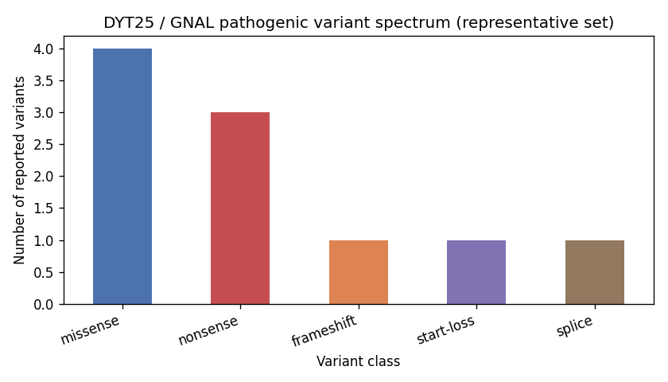

An isolated dystonia caused by pathogenic variants in GNAL, which encodes G-alpha-olf, the stimulatory G protein alpha subunit that couples dopamine D1 and adenosine A2A receptors to adenylyl cyclase 5 in striatal medium spiny neurons and also carries odorant signals in olfactory neurons. The usual form is caused by a single heterozygous variant, inherited dominantly with incomplete penetrance or arising de novo. It presents in adulthood, at a mean age of about 31 years, with dystonia that starts in the neck in most carriers and involves cranial sites (jaw, larynx and eyelids) in more than half and an arm in about a third. Generalization is uncommon, and tremor, often dystonic, may precede or follow the dystonia. A few families carry biallelic variants and show a different picture: hypertonia from early childhood progressing to generalized dystonia, with intellectual disability. Most reported variants are missense; truncating variants, and missense variants that impair activation of G-alpha-olf by the D1 receptor in cell assays, make heterozygous loss of function the accepted mechanism. Rodents with one inactivated Gnal allele have roughly half the normal striatal G-alpha-olf, reduced D1 and A2A receptor stimulation of cAMP production, loss of corticostriatal long-term depression and abnormal dopamine D2 receptor responses of striatal cholinergic interneurons. They do not develop spontaneous dystonia, but a cholinergic agonist given systemically or into the striatum provokes dystonic postures that antimuscarinic drugs prevent. How reduced striatal cAMP signalling leads to adult-onset focal dystonia in people, and why penetrance is incomplete, is not settled. Relationship to Cervical_Dystonia: that entry covers common sporadic adult focal cervical dystonia and types GNAL as a gene explaining a small minority of unselected cases. This entry is the Mendelian entity itself. GNAL is also deleted in chromosome 18p deletion syndrome, where dystonia is attributed to GNAL hemizygosity; that contiguous gene disorder has its own entry. No pathophysiology node declares conforms_to: kb/modules/ has no module for dystonia, basal ganglia motor circuit dysfunction or striatal Golf/cAMP signalling.
Ask a research question about Dystonia 25. OpenScientist will conduct autonomous deep research using the Disorder Mechanisms Knowledge Base and PubMed literature (typically 10-30 minutes).
Do not include personal health information in your question. Questions and results are cached in your browser's local storage.
Conditions with similar clinical presentations that must be differentiated from Dystonia 25:
name: Dystonia 25
creation_date: "2026-10-20T19:17:31Z"
category: Mendelian
synonyms:
- DYT25
- DYT-GNAL
- GNAL-related dystonia
- GNAL dystonic disorder
- dystonia type 25
- dystonic disorder caused by mutation in GNAL
description: >-
An isolated dystonia caused by pathogenic variants in GNAL, which encodes
G-alpha-olf, the stimulatory G protein alpha subunit that couples dopamine D1
and adenosine A2A receptors to adenylyl cyclase 5 in striatal medium spiny
neurons and also carries odorant signals in olfactory neurons. The usual form
is caused by a single heterozygous variant, inherited dominantly with
incomplete penetrance or arising de novo. It presents in adulthood, at a
mean age of about 31 years, with dystonia that starts in the neck in most
carriers and involves cranial sites (jaw, larynx and eyelids) in more than
half and an arm in about a third. Generalization is uncommon, and tremor,
often dystonic, may precede or follow the dystonia. A few families carry
biallelic variants and show a different picture: hypertonia from early
childhood progressing to generalized dystonia, with intellectual disability.
Most reported variants are missense; truncating variants, and missense
variants that impair activation of G-alpha-olf by the D1 receptor in cell
assays, make heterozygous loss of function the accepted mechanism. Rodents with one inactivated Gnal allele have roughly half the
normal striatal G-alpha-olf, reduced D1 and A2A receptor stimulation of cAMP
production, loss of corticostriatal long-term depression and abnormal
dopamine D2 receptor responses of striatal cholinergic interneurons. They do
not develop spontaneous dystonia, but a cholinergic agonist given
systemically or into the striatum provokes dystonic postures that
antimuscarinic drugs prevent. How reduced striatal cAMP signalling leads to
adult-onset focal dystonia in people, and why penetrance is incomplete, is not
settled.
Relationship to Cervical_Dystonia: that entry covers common sporadic adult
focal cervical dystonia and types GNAL as a gene explaining a small minority
of unselected cases. This entry is the Mendelian entity itself. GNAL is also
deleted in chromosome 18p deletion syndrome, where dystonia is attributed to
GNAL hemizygosity; that contiguous gene disorder has its own entry.
No pathophysiology node declares conforms_to: kb/modules/ has no module for
dystonia, basal ganglia motor circuit dysfunction or striatal Golf/cAMP
signalling.
disease_term:
preferred_term: dystonia 25
term:
id: MONDO:0014033
label: dystonia 25
parents:
- Isolated dystonia
- Monogenic dystonia
has_subtypes:
- name: Monoallelic DYT-GNAL
display_name: Monoallelic (autosomal dominant) DYT-GNAL
description: >-
The common form, caused by one heterozygous GNAL variant. Adult-onset
isolated dystonia, usually cervical at onset, spreading to cranial sites
and less often to an arm; rarely generalized.
genes:
- preferred_term: GNAL
term:
id: hgnc:4388
label: GNAL
inheritance:
- name: Autosomal dominant
inheritance_term:
preferred_term: Autosomal dominant
term:
id: HP:0000006
label: Autosomal dominant inheritance
evidence:
- reference: PMID:30605297
reference_title: "DYT-GNAL."
supports: SUPPORT
evidence_source: OTHER
quote_role: REVIEW_SYNTHESIS
snippet: "DYT-GNAL caused by a heterozygous GNAL pathogenic variant has been reported in more than 60 individuals to date."
explanation: GeneReviews chapter defining the heterozygous form.
evidence:
- reference: PMID:30605297
reference_title: "DYT-GNAL."
supports: SUPPORT
evidence_source: OTHER
quote_role: REVIEW_SYNTHESIS
snippet: "It is characterized by adult-onset isolated dystonia (i.e., no neurologic abnormalities other than tremor are evident on neurologic examination)."
explanation: GeneReviews summary of the monoallelic phenotype.
- name: Biallelic DYT-GNAL
display_name: Biallelic (autosomal recessive) DYT-GNAL
description: >-
Reported in two families. Two sisters from a consanguineous Turkish family
homozygous for p.Arg329Trp had hypertonia from about one year of age that
progressed to generalized dystonia, with mild intellectual disability;
their heterozygous parents and siblings had no overt dystonia. A second,
non-consanguineous patient compound heterozygous for a splice variant and a
missense variant, both classed as of uncertain significance, had childhood
language delay, truncal dystonia from age four, moderate intellectual
disability, sensorineural hearing loss and dysmorphic features. Whether
the hearing loss and dysmorphism belong to the GNAL disorder is not known.
genes:
- preferred_term: GNAL
term:
id: hgnc:4388
label: GNAL
inheritance:
- name: Autosomal recessive
inheritance_term:
preferred_term: Autosomal recessive
term:
id: HP:0000007
label: Autosomal recessive inheritance
evidence:
- reference: PMID:27222887
reference_title: "Homozygous GNAL mutation associated with familial childhood-onset generalized dystonia."
supports: SUPPORT
evidence_source: HUMAN_CLINICAL
snippet: "Our findings indicate that mutations in GNAL may manifest through either autosomal dominant or recessive modes of inheritance, with the present patients exhibiting generalized dystonia with onset in childhood."
explanation: >-
Homozygous missense variant segregating with disease in a consanguineous
family, with unaffected heterozygous relatives.
- reference: PMID:38850091
reference_title: "Pediatric Onset of Generalized Dystonia, Cognitive Impairment, and Dysmorphic Features in a Patient Carrying Compound Heterozygous GNAL Mutations."
supports: SUPPORT
evidence_source: HUMAN_CLINICAL
snippet: "Whole exome sequencing displayed two compound heterozygous variants in GNAL (NM_182978.4): c.1163‐1G>A and c.899A>T (p.Gln300Leu), each one inherited from one healthy parent."
explanation: >-
Second biallelic case, each variant inherited from an unaffected
parent. Both variants were classed as of uncertain significance by the
authors.
evidence:
- reference: PMID:30605297
reference_title: "DYT-GNAL."
supports: SUPPORT
evidence_source: OTHER
quote_role: REVIEW_SYNTHESIS
snippet: "DYT-GNAL caused by biallelic GNAL pathogenic variants, reported to date in two sibs from a consanguineous family, is characterized by mild intellectual disability and childhood-onset hypertonia that progresses to generalized dystonia."
explanation: GeneReviews description of the biallelic phenotype.
- reference: PMID:38850091
reference_title: "Pediatric Onset of Generalized Dystonia, Cognitive Impairment, and Dysmorphic Features in a Patient Carrying Compound Heterozygous GNAL Mutations."
supports: SUPPORT
evidence_source: HUMAN_CLINICAL
snippet: "This is a complex case featuring generalized dystonia, sensorineural hearing loss, facial dysmorphic features, and intellectual disability, likely as a consequence of biallelic GNAL variants."
explanation: Phenotype of the compound heterozygous patient.
inheritance:
- name: Autosomal dominant
inheritance_term:
preferred_term: Autosomal dominant
term:
id: HP:0000006
label: Autosomal dominant inheritance
description: >-
Heterozygous GNAL variants segregate dominantly in most families. De novo
variants occur, so a negative family history does not exclude the
diagnosis. One consanguineous family with recessive inheritance is recorded
under the biallelic subtype.
evidence:
- reference: PMID:30605297
reference_title: "DYT-GNAL."
supports: SUPPORT
evidence_source: OTHER
quote_role: REVIEW_SYNTHESIS
snippet: "DYT-GNAL is typically inherited in an autosomal dominant manner (to date, 1 family with autosomal recessive inheritance of DYT-GNAL has been reported)."
explanation: GeneReviews statement of the usual mode of inheritance.
- reference: PMID:30605297
reference_title: "DYT-GNAL."
supports: SUPPORT
evidence_source: OTHER
quote_role: REVIEW_SYNTHESIS
snippet: "Each child of an individual with DYT-GNAL has a 50% chance of inheriting the GNAL pathogenic variant"
explanation: GeneReviews transmission risk for the dominant form.
- reference: PMID:23222958
reference_title: "Mutations in GNAL cause primary torsion dystonia."
supports: SUPPORT
evidence_source: HUMAN_CLINICAL
snippet: "S293X variant in the GNAL gene co-segregated with dystonia in the remaining members of Fam P"
explanation: >-
Gene-identification study in which a heterozygous truncating variant
co-segregated with dystonia in a dominant pedigree.
- reference: PMID:24729450
reference_title: "De novo mutation in the GNAL gene causing seemingly sporadic dystonia in a Serbian patient."
supports: SUPPORT
evidence_source: HUMAN_CLINICAL
snippet: "This is the first report of a de novo GNAL mutation causing genetically proven, seemingly sporadic DYT25 dystonia."
explanation: A de novo heterozygous variant, with parentage confirmed, in a sporadic patient.
- name: Incomplete penetrance
inheritance_term:
preferred_term: Typified by incomplete penetrance
term:
id: HP:0003829
label: Typified by incomplete penetrance
description: >-
Unaffected heterozygous carriers are reported in several families. No
numeric penetrance estimate has been published.
evidence:
- reference: PMID:23449625
reference_title: "Role of Gα(olf) in familial and sporadic adult-onset primary dystonia."
supports: SUPPORT
evidence_source: HUMAN_CLINICAL
snippet: "These mutations show incomplete penetrance."
explanation: Incomplete penetrance in pedigrees carrying truncating and start-loss GNAL variants.
- reference: PMID:27093447
reference_title: "GNAL mutation in isolated laryngeal dystonia."
supports: SUPPORT
evidence_source: HUMAN_CLINICAL
snippet: "This same variant was also present in his unaffected mother, confirming the reduced penetrance of GNAL mutations as shown previously"
explanation: An unaffected carrier mother of a patient with laryngeal dystonia.
- reference: PMID:30605297
reference_title: "DYT-GNAL."
supports: SUPPORT
evidence_source: OTHER
quote_role: REVIEW_SYNTHESIS
snippet: "reduced penetrance and large intrafamilial clinical variability have been reported"
explanation: GeneReviews summary.
pathophysiology:
- name: Heterozygous GNAL Loss-of-Function Variants
biological_scale: MOLECULAR
description: >-
Germline GNAL variants, most often missense and spread across the helical
and Ras-like GTPase domains, with a minority of nonsense, frameshift,
start-loss and splice variants. Truncating variants and several missense
variants abolish or reduce activation of G-alpha-olf by the D1 receptor in
bioluminescence resonance energy transfer assays, so loss of function is
the accepted effect. One review found loss-of-function variants associated
with faster generalization than missense variants, a result its authors
call hypothesis-generating. The GNAL gene binding sits on the next node,
with the molecular function it encodes.
genetic_context:
variant_origin: GERMLINE
zygosity: HETEROZYGOUS
functional_impact_category: LOSS_OF_FUNCTION
downstream:
- target: Reduced G-alpha-olf Signalling Capacity
description: >-
Loss of one functional allele, or a variant that impairs heterotrimer
formation or receptor-driven activation, lowers the pool of active
G-alpha-olf.
evidence:
- reference: PMID:23222958
reference_title: "Mutations in GNAL cause primary torsion dystonia."
supports: SUPPORT
evidence_source: HUMAN_CLINICAL
snippet: "Using exome sequencing in two families with PTD, we identified a new causative gene, GNAL, with a nonsense mutation encoding p.Ser293* resulting in a premature stop codon in one family and a missense mutation encoding p.Val137Met in the other."
explanation: Gene identification by exome sequencing in two dominant families.
- reference: PMID:23449625
reference_title: "Role of Gα(olf) in familial and sporadic adult-onset primary dystonia."
supports: SUPPORT
evidence_source: HUMAN_CLINICAL
snippet: "Screening of 760 subjects with familial and sporadic primary dystonia identified three Caucasian pedigrees with GNAL mutations [c.591dupA (p.R198Tfs*13); c.733C>T (p.R245*); and c.3G>A (p.M1?)]."
explanation: Independent replication with frameshift, nonsense and start-loss variants, which are expected to abolish the allele.
- reference: PMID:42782347
reference_title: "GNAL-associated dystonia: clinical spectrum, genetic features, and genotype-phenotype correlations."
supports: SUPPORT
evidence_source: HUMAN_CLINICAL
snippet: "The genetic spectrum is highly heterogeneous, with predominantly heterozygous missense distributed across the α-helical and Ras-like GTPase domains."
explanation: Variant spectrum across 76 published patients.
- reference: PMID:42782347
reference_title: "GNAL-associated dystonia: clinical spectrum, genetic features, and genotype-phenotype correlations."
supports: SUPPORT
evidence_source: HUMAN_CLINICAL
snippet: "This association was not confirmed in a censoring-based survival analysis (log-rank p=0.904) and should be regarded as hypothesis-generating."
explanation: >-
The faster generalization with loss-of-function variants did not survive
a survival analysis, which is why the description does not treat it as
established.
- name: Reduced G-alpha-olf Signalling Capacity
biological_scale: MOLECULAR
description: >-
G-alpha-olf is the stimulatory G protein alpha subunit that, with beta-2
and gamma-7 subunits, transduces dopamine D1 and adenosine A2A receptor
signals to adenylyl cyclase 5 in the striatum, and odorant receptor signals
in olfactory neurons. Its level is rate-limiting for D1 receptor
activation of adenylyl cyclase 5, so halving it reduces signalling.
Disease variants either fail to support any D1 receptor response or
impair association with G-beta-gamma and the amplitude of the response.
molecular_functions:
- preferred_term: G protein activity
modifier: DECREASED
term:
id: GO:0003925
label: G protein activity
genes:
- preferred_term: GNAL
term:
id: hgnc:4388
label: GNAL
downstream:
- target: Impaired D1 and A2A Receptor Coupling to Adenylyl Cyclase in Striatal Projection Neurons
description: >-
Striatal projection neurons use G-alpha-olf rather than G-alpha-s, so
less G-alpha-olf means weaker D1 and A2A receptor stimulation of cAMP
production.
- target: Paradoxical D2 Receptor Excitation of Striatal Cholinergic Interneurons
description: >-
Cholinergic interneurons also express G-alpha-olf and A2A receptors; in
Gnal heterozygous mice their response to D2 receptor activation is
reversed in an A2A receptor-dependent way.
- target: Impaired Olfactory Signal Transduction
description: >-
G-alpha-olf is the G protein of odorant receptors; complete loss makes
mice anosmic.
evidence:
- reference: PMID:23222958
reference_title: "Mutations in GNAL cause primary torsion dystonia."
supports: SUPPORT
evidence_source: IN_VITRO
snippet: "The p.S293X deletion mutant failed to support any D1R driven responses while p.V16F, a variant found in a single control sample showed normal wild-type like behavior."
explanation: BRET assay in cells showing a truncating patient variant abolishes D1 receptor-driven activation.
- reference: PMID:23222958
reference_title: "Mutations in GNAL cause primary torsion dystonia."
supports: SUPPORT
evidence_source: IN_VITRO
snippet: "Two mutants found in dystonia patients, p.E155K and p.V137M, showed intermediate phenotypes largely consistent with impaired association with the Gβγ subunits"
explanation: Missense patient variants partially impair heterotrimer formation.
- reference: PMID:24535567
reference_title: "Mutations in GNAL: a novel cause of craniocervical dystonia."
supports: SUPPORT
evidence_source: IN_VITRO
snippet: "These variants were predicted to be pathogenic in silico, were absent in ethnically matched control individuals, and impaired Gαolf coupling to D1 receptors in a bioluminescence energy transfer (BRET) assay."
explanation: Two further patient missense variants impair coupling to the D1 receptor.
- reference: PMID:26810727
reference_title: "Screening of GNAL variants in Brazilian patients with isolated dystonia reveals a novel mutation with partial loss of function."
supports: SUPPORT
evidence_source: IN_VITRO
snippet: "The F133L mutant exhibited significantly elevated levels of basal BRET and severely diminished amplitude of response elicited by dopamine, that both indicate substantial functional impairment of Gαolf in transducing receptor signals, which could be involved in dystonia pathophysiology."
explanation: A further patient variant with partial loss of function.
- reference: PMID:23222958
reference_title: "Mutations in GNAL cause primary torsion dystonia."
supports: SUPPORT
evidence_source: MODEL_ORGANISM
quote_role: BACKGROUND
snippet: "The level of Gαolf is rate-limiting in the activation of AC5 following stimulation of the D1R"
explanation: >-
Rationale for haploinsufficiency, restating earlier rodent work rather
than a result of this study.
- name: Impaired D1 and A2A Receptor Coupling to Adenylyl Cyclase in Striatal Projection Neurons
biological_scale: CELLULAR
description: >-
Virtually all striatal projection neurons contain G-alpha-olf and no
detectable G-alpha-s, so G-alpha-olf is required for adenylyl cyclase
responses to dopamine through D1 receptors in direct-pathway neurons and to
adenosine through A2A receptors in indirect-pathway neurons. In mice with
one inactivated Gnal allele, striatal G-alpha-olf is halved and
receptor-stimulated cAMP production is reduced; heterozygous rats also show
reduced adenylyl cyclase 5 and secondary changes in A2A and D2 receptor
levels. Basal cAMP is unchanged. Cell-type-specific deletion confirms that
G-alpha-olf is needed for D1 and A2A receptor coupling in the respective
neuron types.
cell_types:
- preferred_term: medium spiny neuron
term:
id: CL:1001474
label: medium spiny neuron
- preferred_term: direct pathway medium spiny neuron
term:
id: CL:4023026
label: direct pathway medium spiny neuron
- preferred_term: indirect pathway medium spiny neuron
term:
id: CL:4023029
label: indirect pathway medium spiny neuron
biological_processes:
- preferred_term: dopamine D1 receptor stimulation of adenylyl cyclase
modifier: DECREASED
term:
id: GO:0007191
label: adenylate cyclase-activating dopamine receptor signaling pathway
- preferred_term: adenosine A2A receptor signalling
modifier: DECREASED
term:
id: GO:0001973
label: G protein-coupled adenosine receptor signaling pathway
locations:
- preferred_term: dorsal striatum
term:
id: UBERON:0005382
label: dorsal striatum
downstream:
- target: Loss of Corticostriatal Long-Term Depression
description: >-
Altered A2A and D2 receptor signalling in the heterozygous rat striatum
is proposed by its authors to explain the loss of D2 receptor-dependent
corticostriatal long-term depression.
evidence:
- reference: PMID:38182074
reference_title: "Loss-of-function of GNAL dystonia gene impairs striatal dopamine receptors-mediated adenylyl cyclase/ cyclic AMP signaling pathway."
supports: SUPPORT
directness: INDIRECT
evidence_source: MODEL_ORGANISM
snippet: "Altogether, our findings demonstrate a profound alteration in the A2AR/D2R-AC-cAMP cascade in the striatum of the rat DYT-GNAL dystonia model, and provide a plausible explanation for our previous findings on the loss of dopamine D2R-dependent corticostriatal long-term depression."
explanation: The authors link the signalling defect to the plasticity defect as a plausible explanation, not a demonstrated causal step.
- target: Bradykinesia
description: >-
Proposed rather than shown: reduced dopamine D1 receptor signalling is
offered as the explanation for the bradykinesia reported in some
patients.
evidence:
- reference: PMID:41632233
reference_title: "Long-term efficiency of pallidal DBS and the role of Levodopa treatment in DYT-GNAL and 18p deletion syndrome associated dystonia: an observational study and review of literature."
supports: SUPPORT
directness: INDIRECT
evidence_source: HUMAN_CLINICAL
snippet: "GNAL is implicated in dopamine receptor function, which may explain anecdotal reports of hypokinesia in DYT-GNAL and 18pdel-associated dystonia, a phenomenon that has not yet been systematically reviewed."
explanation: States the link as a hypothesis.
evidence:
- reference: PMID:11404425
reference_title: "Galpha(olf) levels are regulated by receptor usage and control dopamine and adenosine action in the striatum."
supports: SUPPORT
evidence_source: MODEL_ORGANISM
snippet: "In this study, using double in situ hybridization, we show that virtually all striatal efferent neurons, identified by the expression of preproenkephalin A, substance P, or D(1) receptor mRNA, contained high amounts of Galpha(olf) mRNA and undetectable levels of Galpha(s) mRNA."
explanation: G-alpha-olf rather than G-alpha-s is the stimulatory alpha subunit of rodent striatal projection neurons.
- reference: PMID:11238742
reference_title: "Galpha(olf) is necessary for coupling D1 and A2a receptors to adenylyl cyclase in the striatum."
supports: SUPPORT
evidence_source: MODEL_ORGANISM
snippet: "Using mutant mice deficient in the olfactory isoform of the stimulatory GTP-binding protein alpha subunit, Galpha(olf), we demonstrate here the obligatory role of this protein in the adenylyl cyclase responses to dopamine and adenosine in the caudate putamen."
explanation: G-alpha-olf is required for D1 and A2A receptor-stimulated adenylyl cyclase activity in mouse striatum.
- reference: PMID:11238742
reference_title: "Galpha(olf) is necessary for coupling D1 and A2a receptors to adenylyl cyclase in the striatum."
supports: SUPPORT
evidence_source: MODEL_ORGANISM
snippet: "Moreover, in the caudate putamen of mice heterozygous for the mutation, the amounts of Galpha(olf) were half of the normal levels, and the efficacy of dopamine- and CGS 21680 A(2) agonist-stimulated cAMP production was decreased."
explanation: One inactivated allele, the human genotype, is enough to reduce receptor-stimulated cAMP production.
- reference: PMID:38182074
reference_title: "Loss-of-function of GNAL dystonia gene impairs striatal dopamine receptors-mediated adenylyl cyclase/ cyclic AMP signaling pathway."
supports: SUPPORT
evidence_source: MODEL_ORGANISM
snippet: "In addition, the striatal isoform of adenylyl cyclase (AC5) was reduced, despite unaltered basal cAMP levels."
explanation: Heterozygous Gnal rats show reduced striatal adenylyl cyclase 5 with normal basal cAMP.
- reference: PMID:40902679
reference_title: "Characterization of mice with cell type-specific Gnal loss of function provides insights on GNAL-linked dystonia."
supports: SUPPORT
evidence_source: MODEL_ORGANISM
snippet: "Our results confirm the critical role of Gαolf in regulating adenylyl-cyclase 5 and its coupling with D1 and A2A receptors."
explanation: Conditional deletion in D1 or A2A receptor-expressing projection neurons.
- reference: PMID:23222958
reference_title: "Mutations in GNAL cause primary torsion dystonia."
supports: SUPPORT
evidence_source: HUMAN_CLINICAL
snippet: "However, unlike the DRD mutations, GNAL mutations place the primary abnormality post-synaptically in striatal dopaminoceptive neurons and/or cholinergic interneurons."
explanation: >-
The gene-identification study's reading of where the lesion acts,
contrasting it with presynaptic dopamine synthesis defects in
dopa-responsive dystonia.
- name: Loss of Corticostriatal Long-Term Depression
biological_scale: CELLULAR
description: >-
Heterozygous Gnal rats lose D2 receptor-dependent long-term depression at
corticostriatal synapses, with reduced Arc expression and more AMPA
receptors at the surface of striatal neurons. Blocking A2A receptors
restores the depression, and chronic treatment with an mGlu5 negative
allosteric modulator also rescues it. Loss of this form of plasticity is
shared with a TOR1A dystonia model.
cell_types:
- preferred_term: medium spiny neuron
term:
id: CL:1001474
label: medium spiny neuron
biological_processes:
- preferred_term: corticostriatal long-term depression
modifier: DECREASED
term:
id: GO:0060292
label: long-term synaptic depression
downstream:
- target: Striatal Motor Circuit Dysfunction
description: >-
Impaired corticostriatal plasticity is treated as an endophenotype of
several genetic dystonias; how it produces dystonic movement is not
established.
evidence:
- reference: PMID:33991565
reference_title: "Rescue of striatal long-term depression by chronic mGlu5 receptor negative allosteric modulation in distinct dystonia models."
supports: SUPPORT
directness: INDIRECT
evidence_source: MODEL_ORGANISM
quote_role: BACKGROUND
snippet: "An impairment of long-term synaptic plasticity is considered as a peculiar endophenotype of distinct forms of dystonia, a common, disabling movement disorder."
explanation: Framing statement linking the plasticity defect to dystonia in general.
evidence:
- reference: PMID:31678405
reference_title: "Impaired dopamine- and adenosine-mediated signaling and plasticity in a novel rodent model for DYT25 dystonia."
supports: SUPPORT
evidence_source: MODEL_ORGANISM
snippet: "At cellular and molecular level, we found down-regulated Arc expression, increased cell surface distribution of AMPA receptors, and the loss of D2R-dependent corticostriatal long-term depression (LTD) in Gnal+/- rats."
explanation: Plasticity defect in heterozygous Gnal rats.
- reference: PMID:31678405
reference_title: "Impaired dopamine- and adenosine-mediated signaling and plasticity in a novel rodent model for DYT25 dystonia."
supports: SUPPORT
evidence_source: MODEL_ORGANISM
snippet: "Based on the evidence that D2R activity is normally inhibited by adenosine A2ARs, co-localized on the same population of striatal neurons, we show that blockade of A2ARs restores physiological LTD."
explanation: A2A receptor blockade rescues the defect.
- reference: PMID:33991565
reference_title: "Rescue of striatal long-term depression by chronic mGlu5 receptor negative allosteric modulation in distinct dystonia models."
supports: SUPPORT
evidence_source: MODEL_ORGANISM
snippet: "We show that, whereas acute treatment failed to rescue LTD, chronic dipraglurant rescued this form of synaptic plasticity both in DYT1 mice and GNAL rats."
explanation: Pharmacological rescue shared with a TOR1A model.
- name: Paradoxical D2 Receptor Excitation of Striatal Cholinergic Interneurons
biological_scale: CELLULAR
description: >-
Striatal cholinergic interneurons express both G-alpha-olf and G-alpha-s.
In Gnal heterozygous mice, activation of D2 receptors excites these
interneurons instead of inhibiting them, and the effect is reversed by
blocking A2A receptors; extracellular striatal acetylcholine is not raised,
unlike in TOR1A and THAP1 models. Heterozygous rats likewise show an
attenuated inhibitory D2 receptor response in these interneurons.
cell_types:
- preferred_term: striatal cholinergic interneuron
term:
id: CL:0020008
label: striatal cholinergic-GABAergic neuron
downstream:
- target: Striatal Motor Circuit Dysfunction
description: >-
Increased striatal cholinergic drive is the proposed trigger of dystonic
movement: in Gnal heterozygous mice a muscarinic agonist provokes
dystonic postures that M1-preferring antagonists prevent.
evidence:
- reference: PMID:28546310
reference_title: "Heterozygous Gnal Mice Are a Novel Animal Model with Which to Study Dystonia Pathophysiology."
supports: SUPPORT
directness: INDIRECT
evidence_source: MODEL_ORGANISM
snippet: "They were prevented by the M1-preferring muscarinic antagonists, telenzepine, pirenzepine, and trihexyphenidyl, which alleviate dystonic symptoms in patients."
explanation: >-
Shows that muscarinic signalling is needed for the provoked dystonic
movements. The agonist is applied from outside, so this does not show
that the interneuron change itself produces them.
evidence:
- reference: PMID:11404425
reference_title: "Galpha(olf) levels are regulated by receptor usage and control dopamine and adenosine action in the striatum."
supports: SUPPORT
evidence_source: MODEL_ORGANISM
snippet: "In contrast, the large cholinergic interneurons contained both Galpha(olf) and Galpha(s) transcripts."
explanation: G-alpha-olf expression in striatal cholinergic interneurons.
- reference: PMID:31320448
reference_title: "Diverse Mechanisms Lead to Common Dysfunction of Striatal Cholinergic Interneurons in Distinct Genetic Mouse Models of Dystonia."
supports: SUPPORT
evidence_source: MODEL_ORGANISM
snippet: "Elevated extracellular acetylcholine was absent in male and female Gnal+/- mice, but the paradoxical D2R-mediated ChI excitation was retained and only reversed by inhibition of adenosine A2ARs."
explanation: The interneuron defect in Gnal heterozygous mice and its dependence on A2A receptors.
- reference: PMID:38182074
reference_title: "Loss-of-function of GNAL dystonia gene impairs striatal dopamine receptors-mediated adenylyl cyclase/ cyclic AMP signaling pathway."
supports: SUPPORT
evidence_source: MODEL_ORGANISM
snippet: "Additionally, by analyzing the responses of striatal cholinergic interneurons to D2R activation, we found that the receptor-mediated inhibitory effect is significantly attenuated in GNAL+/- interneurons."
explanation: Replication of an abnormal D2 receptor response in heterozygous rat interneurons.
- name: Striatal Motor Circuit Dysfunction
biological_scale: TISSUE
description: >-
The striatal circuit level at which the cellular defects are thought to
produce dystonia. Gnal heterozygous mice show only mild motor and
behavioural changes at baseline, with altered striatal spine morphology,
but develop dystonic postures and movements after a cholinergic agonist
given systemically or into the striatum, not into the cerebellum.
Heterozygous rats have reduced locomotion and impaired rotarod performance
and motor learning. Increased cerebello-thalamic excitability has also
been recorded in the mouse model; whether the cerebellum contributes
independently is recorded as an open question.
locations:
- preferred_term: striatum
term:
id: UBERON:0002435
label: striatum
downstream:
- target: Cervical dystonia
description: The neck is the usual site of onset and of involvement.
- target: Oromandibular dystonia
description: Spread to the jaw is one of the common cranial extensions.
- target: Laryngeal dystonia
description: Spread to the larynx, and rarely isolated laryngeal dystonia.
- target: Blepharospasm
description: Spread to the eyelids.
- target: Arm dystonia
description: Spread to an arm in about a third of carriers.
- target: Tremor
description: Dystonic tremor accompanying the dystonia.
- target: Generalized dystonia
description: >-
Uncommon in the monoallelic form; the rule in the biallelic form.
evidence:
- reference: PMID:28546310
reference_title: "Heterozygous Gnal Mice Are a Novel Animal Model with Which to Study Dystonia Pathophysiology."
supports: SUPPORT
evidence_source: MODEL_ORGANISM
snippet: "These oxotremorine-induced abnormalities in Gnal+/- mice were replicated by oxotremorine infusion into the striatum, but not into the cerebellum, indicating that defects in striatal neurons favor the appearance of dystonia-like movement alterations after oxotremorine."
explanation: Localizes the provoked dystonic movements to the striatum in the mouse model.
- reference: PMID:28546310
reference_title: "Heterozygous Gnal Mice Are a Novel Animal Model with Which to Study Dystonia Pathophysiology."
supports: SUPPORT
evidence_source: MODEL_ORGANISM
snippet: "However, Gnal haploinsufficiency altered self-grooming, motor coordination, and apparent motivation in operant conditioning, as well as spine morphology and phospho-CaMKIIβ in the striatum."
explanation: Baseline striatal and motor changes without overt dystonia.
- reference: PMID:31678405
reference_title: "Impaired dopamine- and adenosine-mediated signaling and plasticity in a novel rodent model for DYT25 dystonia."
supports: SUPPORT
evidence_source: MODEL_ORGANISM
snippet: "Gnal+/- rats showed early-onset phenotypes associated with impaired dopamine transmission, including reduction in locomotor activity, deficits in rotarod performance and an abnormal motor skill learning ability."
explanation: Motor phenotype of heterozygous Gnal rats.
- name: Impaired Olfactory Signal Transduction
biological_scale: CELLULAR
description: >-
G-alpha-olf couples odorant receptors to adenylyl cyclase in olfactory
receptor neurons, and Gnal-null mice are anosmic. Whether one inactivated
allele reduces smell in people is uncertain: reduced smell was found in one
family and has not been reported as a consistent feature.
cell_types:
- preferred_term: olfactory receptor cell
term:
id: CL:0000207
label: olfactory receptor cell
biological_processes:
- preferred_term: sensory perception of smell
modifier: DECREASED
term:
id: GO:0007608
label: sensory perception of smell
downstream:
- target: Hyposmia
description: Reduced smell reported in carriers of one family.
evidence:
- reference: PMID:24535567
reference_title: "Mutations in GNAL: a novel cause of craniocervical dystonia."
supports: SUPPORT
evidence_source: MODEL_ORGANISM
quote_role: BACKGROUND
snippet: "Notably, Gnal-null mice are anosmic,6 raising the possibility that mutations in GNAL may also cause hyposmia in humans."
explanation: Restates earlier knockout work as the rationale for testing smell.
phenotypes:
- category: Neurologic
name: Cervical dystonia
description: >-
The neck is the site of onset in about four fifths of carriers and is
involved in nearly all at last examination. Most carriers then spread to
other sites, so fewer than half remain focal.
frequency: VERY_FREQUENT
subtype: Monoallelic DYT-GNAL
phenotype_term:
preferred_term: Cervical dystonia
term:
id: HP:0000473
label: Torticollis
evidence:
- reference: PMID:23222958
reference_title: "Mutations in GNAL cause primary torsion dystonia."
supports: SUPPORT
evidence_source: HUMAN_CLINICAL
snippet: "Most carriers (82%) had onset in the neck, and 93% had neck involvement at final exam, however most progressed to have dystonia at other sites, and only 46% had focal dystonia at last exam."
explanation: Source for the VERY_FREQUENT band (93 percent neck involvement) in the gene-identification families.
- reference: PMID:30605297
reference_title: "DYT-GNAL."
supports: SUPPORT
evidence_source: OTHER
quote_role: REVIEW_SYNTHESIS
snippet: "Dystonia is typically cervical in onset and commonly progresses to the cranial region (oromandibular/jaw, larynx, eyelids) and/or to one arm."
explanation: GeneReviews summary of onset site and spread.
- reference: PMID:33502045
reference_title: "Genotype-Phenotype Relations for Isolated Dystonia Genes: MDSGene Systematic Review."
supports: SUPPORT
evidence_source: HUMAN_CLINICAL
snippet: "GNAL and KMT2B mutation carriers frequently have 1 predominant site of onset, that is, the neck (GNAL) or the lower limbs (KMT2B), whereas site of onset in DYT-TOR1A, DYT-THAP1, DYT-ANO3, DYT-PRKRA, and DYT-HPCA was broader."
explanation: Systematic review identifying the neck as the predominant site of onset.
- category: Neurologic
name: Oromandibular dystonia
description: >-
Jaw involvement as part of cranial spread. Cranial involvement of any kind
was present in 57 percent of carriers in the original families; a separate
figure for the jaw is not given.
subtype: Monoallelic DYT-GNAL
phenotype_term:
preferred_term: Oromandibular dystonia
term:
id: HP:0012048
label: Oromandibular dystonia
evidence:
- reference: PMID:30605297
reference_title: "DYT-GNAL."
supports: SUPPORT
evidence_source: OTHER
quote_role: REVIEW_SYNTHESIS
snippet: "Dystonia is typically cervical in onset and commonly progresses to the cranial region (oromandibular/jaw, larynx, eyelids) and/or to one arm."
explanation: Oromandibular involvement named among the cranial sites of spread.
- reference: PMID:23222958
reference_title: "Mutations in GNAL cause primary torsion dystonia."
supports: SUPPORT
evidence_source: HUMAN_CLINICAL
snippet: "Further, cranial involvement was present in 57% of carriers, and 44% had speech involvement."
explanation: >-
Frequency of cranial involvement overall. No frequency band is set for
the jaw because the figure covers all cranial sites.
- category: Neurologic
name: Laryngeal dystonia
description: >-
Spasmodic dysphonia, usually as part of craniocervical dystonia; a GNAL
variant has also been found in isolated laryngeal dystonia. The original
families report speech involvement in 44 percent of carriers, but that
figure is not attributed to the larynx rather than to oromandibular,
lingual or cervical involvement, so it is not a laryngeal frequency.
subtype: Monoallelic DYT-GNAL
phenotype_term:
preferred_term: Laryngeal dystonia
term:
id: HP:0012049
label: Laryngeal dystonia
evidence:
- reference: PMID:23449625
reference_title: "Role of Gα(olf) in familial and sporadic adult-onset primary dystonia."
supports: SUPPORT
evidence_source: HUMAN_CLINICAL
snippet: "After excluding mutations in known primary dystonia genes (TOR1A, THAP1 and CIZ1), whole-exome sequencing identified a GNAL missense mutation (c.682G>T, p.V228F) in an African-American pedigree with clinical phenotypes that include cervical, laryngeal and hand-forearm dystonia."
explanation: Laryngeal dystonia in a GNAL pedigree.
- reference: PMID:27093447
reference_title: "GNAL mutation in isolated laryngeal dystonia."
supports: SUPPORT
evidence_source: HUMAN_CLINICAL
snippet: "Our finding of one GNAL carrier in 57 LD patients (1.8%) demonstrates that rare mutations in this gene do cause isolated LD, thus broadening the range of clinical phenotypes of dystonia associated with GNAL mutations."
explanation: A GNAL variant in a patient with isolated laryngeal dystonia.
- category: Neurologic
name: Blepharospasm
description: Eyelid involvement as part of cranial spread.
subtype: Monoallelic DYT-GNAL
phenotype_term:
preferred_term: Blepharospasm
term:
id: HP:0000643
label: Blepharospasm
evidence:
- reference: PMID:30605297
reference_title: "DYT-GNAL."
supports: SUPPORT
evidence_source: OTHER
quote_role: REVIEW_SYNTHESIS
snippet: "Dystonia is typically cervical in onset and commonly progresses to the cranial region (oromandibular/jaw, larynx, eyelids) and/or to one arm."
explanation: The eyelids are named among the cranial sites of spread.
- category: Neurologic
name: Arm dystonia
description: >-
Spread to one arm, including writer's cramp, in about a third of carriers.
Arm onset was not seen in the original families, which helps separate the
disorder from THAP1 dystonia.
frequency: FREQUENT
subtype: Monoallelic DYT-GNAL
phenotype_term:
preferred_term: Arm dystonia
term:
id: HP:0031960
label: Arm dystonia
evidence:
- reference: PMID:23222958
reference_title: "Mutations in GNAL cause primary torsion dystonia."
supports: SUPPORT
evidence_source: HUMAN_CLINICAL
snippet: "Brachial onset was not observed and eventual arm involvement was seen in only 32%, distinguishing GNAL from DYT6"
explanation: Source for the FREQUENT band (32 percent).
- category: Neurologic
name: Tremor
description: >-
Tremor, often dystonic, of the head or arms; it can precede or follow the
dystonia.
subtype: Monoallelic DYT-GNAL
phenotype_term:
preferred_term: Tremor
term:
id: HP:0001337
label: Tremor
evidence:
- reference: PMID:30605297
reference_title: "DYT-GNAL."
supports: SUPPORT
evidence_source: OTHER
quote_role: REVIEW_SYNTHESIS
snippet: "Tremor reported in DYT-GNAL may be dystonic (i.e., occurring in a body part that shows at least minimal signs of dystonia) and may precede or follow the onset of dystonia."
explanation: GeneReviews description of tremor.
- reference: PMID:30536916
reference_title: "Deep Brain Stimulation in Isolated Dystonia With a GNAL Mutation."
supports: SUPPORT
evidence_source: HUMAN_CLINICAL
snippet: "Case 1 developed head tremor at age 38, which progressed to antero- and laterocollis, then retrocollis, bilateral shoulder elevation, bilateral arm tremor, and writer’s cramp."
explanation: Head tremor as the presenting feature in one carrier, followed by arm tremor and writer's cramp.
- reference: PMID:26725140
reference_title: "Novel GNAL mutation with intra-familial clinical heterogeneity: Expanding the phenotype."
supports: SUPPORT
evidence_source: HUMAN_CLINICAL
snippet: "Pure asymmetric upper limb dystonic tremor was present in one of the members and jerky cervical dystonia was also observed."
explanation: Dystonic tremor as the only manifestation in one member of a GNAL family.
- category: Neurologic
name: Generalized dystonia
description: >-
Uncommon in carriers of a single variant, in whom spread is usually
segmental, but it occurs; it is the defining feature of the biallelic form,
beginning in childhood.
subtypes:
- Monoallelic DYT-GNAL
- Biallelic DYT-GNAL
phenotype_term:
preferred_term: Generalized dystonia
term:
id: HP:0007325
label: Generalized dystonia
evidence:
- reference: PMID:33502045
reference_title: "Genotype-Phenotype Relations for Isolated Dystonia Genes: MDSGene Systematic Review."
supports: SUPPORT
evidence_source: HUMAN_CLINICAL
snippet: "GNAL mutation carriers rarely showed generalization."
explanation: Generalization is rare in the monoallelic form.
- reference: PMID:42782347
reference_title: "GNAL-associated dystonia: clinical spectrum, genetic features, and genotype-phenotype correlations."
supports: SUPPORT
evidence_source: HUMAN_CLINICAL
snippet: "Dystonia was predominantly focal at onset, with cervical dystonia being most common; and 54% patients with focal onset progressed to segmental or generalized dystonia, with a median time to generalization of 6 years."
explanation: >-
Spread beyond the site of onset in a review of 76 patients; the 54
percent combines segmental and generalized outcomes, so it is not used as
a frequency for generalization.
- reference: PMID:27222887
reference_title: "Homozygous GNAL mutation associated with familial childhood-onset generalized dystonia."
supports: SUPPORT
evidence_source: HUMAN_CLINICAL
snippet: "At age 15 years, she exhibited generalized dystonia and impaired volitional movement."
explanation: Generalized dystonia in a homozygous patient.
- category: Neurologic
name: Hypertonia
description: Increased muscle tone from about one year of age in the biallelic sisters.
subtype: Biallelic DYT-GNAL
phenotype_term:
preferred_term: Hypertonia
term:
id: HP:0001276
label: Hypertonia
onset:
onset_category: CHILDHOOD
notes: >-
The parents of the index patient first became concerned at age 1 year,
when she began to show exaggerated muscle tone (PMID:27222887), and
GeneReviews describes the biallelic form as childhood-onset hypertonia
(PMID:30605297).
evidence:
- reference: PMID:27222887
reference_title: "Homozygous GNAL mutation associated with familial childhood-onset generalized dystonia."
supports: SUPPORT
evidence_source: HUMAN_CLINICAL
snippet: "The girl's parents first became concerned at age 1 year when she began to show evidence of exaggerated muscle tone."
explanation: Onset of hypertonia in the index patient.
- reference: PMID:30605297
reference_title: "DYT-GNAL."
supports: SUPPORT
evidence_source: OTHER
quote_role: REVIEW_SYNTHESIS
snippet: "DYT-GNAL caused by biallelic GNAL pathogenic variants, reported to date in two sibs from a consanguineous family, is characterized by mild intellectual disability and childhood-onset hypertonia that progresses to generalized dystonia."
explanation: GeneReviews summary.
- category: Neurodevelopmental
name: Intellectual disability
description: >-
Mild intellectual disability in both homozygous sisters; moderate
intellectual disability in the compound heterozygous patient.
notes: >-
Bound to the unqualified parent term rather than to Mild intellectual
disability (HP:0001256), because the severity differs across the three
reported patients and no severity-qualified term is true of all of them.
subtype: Biallelic DYT-GNAL
phenotype_term:
preferred_term: Intellectual disability
term:
id: HP:0001249
label: Intellectual disability
evidence:
- reference: PMID:27222887
reference_title: "Homozygous GNAL mutation associated with familial childhood-onset generalized dystonia."
supports: SUPPORT
evidence_source: HUMAN_CLINICAL
snippet: "She experienced academic difficulties upon starting school, and was diagnosed with mild intellectual disability."
explanation: Mild intellectual disability in the homozygous index patient.
- reference: PMID:38850091
reference_title: "Pediatric Onset of Generalized Dystonia, Cognitive Impairment, and Dysmorphic Features in a Patient Carrying Compound Heterozygous GNAL Mutations."
supports: SUPPORT
evidence_source: HUMAN_CLINICAL
snippet: "A moderate intellectual disability (ID) was also diagnosed (total Griffith scale score 59)."
explanation: Moderate intellectual disability in the compound heterozygous patient, the more severe end of the range this phenotype covers.
- category: Neurologic
name: Bradykinesia
description: >-
Reported in some patients and prompting levodopa trials, with improvement
in a minority. Whether it is part of the disorder is not established.
subtype: Monoallelic DYT-GNAL
phenotype_term:
preferred_term: Bradykinesia
term:
id: HP:0002067
label: Bradykinesia
evidence:
- reference: PMID:41632233
reference_title: "Long-term efficiency of pallidal DBS and the role of Levodopa treatment in DYT-GNAL and 18p deletion syndrome associated dystonia: an observational study and review of literature."
supports: SUPPORT
evidence_source: HUMAN_CLINICAL
snippet: "Two patients exhibited bradykinesia, which was levodopa-responsive in one."
explanation: Bradykinesia in two of three DBS-treated patients.
- reference: PMID:41632233
reference_title: "Long-term efficiency of pallidal DBS and the role of Levodopa treatment in DYT-GNAL and 18p deletion syndrome associated dystonia: an observational study and review of literature."
supports: SUPPORT
evidence_source: HUMAN_CLINICAL
snippet: "Bradykinesia may be an inherent clinical feature of GNAL-related dystonia, warranting further investigation."
explanation: The authors' own caution that the association is not established.
- category: Neurologic
name: Hyposmia
description: >-
Reduced smell (microsmia) in carriers of the p.Val228Phe family. Not
reported as a consistent feature in other families.
subtype: Monoallelic DYT-GNAL
phenotype_term:
preferred_term: Microsmia
term:
id: HP:0004409
label: Hyposmia
evidence:
- reference: PMID:23449625
reference_title: "Role of Gα(olf) in familial and sporadic adult-onset primary dystonia."
supports: SUPPORT
evidence_source: HUMAN_CLINICAL
snippet: "African-American subjects harboring the p.V228F mutation exhibited microsmia."
explanation: Reduced smell in one GNAL family.
genetic:
- name: GNAL
gene_term:
preferred_term: GNAL
term:
id: hgnc:4388
label: GNAL
relationship_type: CAUSATIVE
variant_origin: GERMLINE
case_fractions:
- population: Spanish isolated dystonia cohort, southern and central Spain
case_fraction_percent: 0.29
cohort_size: 1053
notes: >-
Pathogenic or likely pathogenic GNAL variants among patients with
isolated dystonia of all subtypes; the same study found GNAL variants in
about 1.1 percent of patients across the published literature.
evidence:
- reference: PMID:33175450
reference_title: "Mutational spectrum of GNAL, THAP1 and TOR1A genes in isolated dystonia: study in a population from Spain and systematic literature review."
supports: SUPPORT
evidence_source: HUMAN_CLINICAL
snippet: "Pathogenic or likely pathogenic variants in TOR1A, THAP1 and GNAL were identified in 0.48%, 0.57% and 0.29% of our patients, respectively."
explanation: Case fraction in a large Spanish cohort.
- population: Serbian patients with isolated dystonia with craniocervical involvement
case_fraction_percent: 0.4
cohort_size: 236
notes: One de novo variant among 236 patients.
evidence:
- reference: PMID:24729450
reference_title: "De novo mutation in the GNAL gene causing seemingly sporadic dystonia in a Serbian patient."
supports: SUPPORT
evidence_source: HUMAN_CLINICAL
snippet: "One novel likely pathogenic substitution (c.1061T>C; p.Val354Ala) in GNAL was detected in a sporadic cervical dystonia patient (mutation frequency: 0.4%)."
explanation: Case fraction in a Serbian craniocervical dystonia cohort.
- population: Northeast Chinese patients with cervical-onset or cervical-involved primary dystonia, TOR1A and THAP1 negative
case_fraction_percent: 3.4
cohort_size: 59
notes: >-
Two carriers among 59 patients, one with a nonsense variant and one with
a tentative splice-site variant; the cohort was pre-screened negative for
TOR1A and THAP1, which raises the fraction.
evidence:
- reference: PMID:23759320
reference_title: "Mutation screening of GNAL gene in patients with primary dystonia from Northeast China."
supports: SUPPORT
evidence_source: HUMAN_CLINICAL
snippet: "Mutations in GNAL gene can cause adult-onset primary dystonia in Chinese patients, and the mutation frequency is 3.4% in cervical onset or cervical involved primary dystonia."
explanation: Case fraction in a Chinese cervical dystonia cohort.
notes: >-
GNAL is hgnc:4388, encoding G-alpha-olf. The disease is defined by this gene
in MONDO, so the record is typed CAUSATIVE for the entity. That typing is
not a ClinGen tier: the ClinGen Gene-Disease Validity download retrieved on
2026-10-20 contains no GNAL curation, so no gene_disease_validity assertion
is recorded.
GNAL variants explain a small fraction of isolated dystonia: under 1
percent in unselected cohorts, and about 3 percent in one cervical
dystonia cohort pre-screened negative for TOR1A and THAP1. Rare GNAL
missense variants are
hard to interpret, so segregation, de novo occurrence or a functional
assay is used before a novel missense variant is called pathogenic.
Cervical_Dystonia records GNAL separately for common sporadic cervical
dystonia, which is a different claim from this one.
evidence:
- reference: PMID:23222958
reference_title: "Mutations in GNAL cause primary torsion dystonia."
supports: SUPPORT
evidence_source: HUMAN_CLINICAL
snippet: "Screening of GNAL in 39 families with PTD identified 6 additional new mutations in this gene."
explanation: Further GNAL variants in dystonia families after the gene was identified.
- reference: PMID:23449625
reference_title: "Role of Gα(olf) in familial and sporadic adult-onset primary dystonia."
supports: SUPPORT
evidence_source: HUMAN_CLINICAL
snippet: "Our findings corroborate those of a recent study which used whole-exome sequencing to identify missense and nonsense GNAL mutations in Caucasian pedigrees of mixed European ancestry with mainly adult-onset cervical and segmental dystonia."
explanation: Independent replication in further pedigrees.
- reference: PMID:24535567
reference_title: "Mutations in GNAL: a novel cause of craniocervical dystonia."
supports: SUPPORT
evidence_source: HUMAN_CLINICAL
snippet: "Mutations in GNAL can cause craniocervical dystonia in different ethnicities."
explanation: Replication in German and Japanese patients.
- reference: PMID:24151159
reference_title: "Rare sequence variants in ANO3 and GNAL in a primary torsion dystonia series and controls."
supports: SUPPORT
evidence_source: HUMAN_CLINICAL
snippet: "CONCLUSIONS: GNAL variants seem to be a rare cause of PTD in our mainly sporadic German sample."
explanation: Low yield in a mainly sporadic cohort, consistent with a rare Mendelian cause.
treatments:
- name: Botulinum toxin chemodenervation
description: >-
Intramuscular botulinum toxin for cervical and other focal dystonia, and
for selected muscles in generalized dystonia, with improvement in some
patients.
therapeutic_modality: OTHER
treatment_term:
preferred_term: botulinum toxin chemodenervation
term:
id: NCIT:C157775
label: Botulinum Toxin Therapy
target_mechanisms:
- target: Cervical dystonia
description: >-
Weakens the dystonic muscles at the neuromuscular junction; symptomatic,
and downstream of every mechanism node in the entry.
evidence:
- reference: PMID:30605297
reference_title: "DYT-GNAL."
supports: SUPPORT
evidence_source: OTHER
quote_role: REVIEW_SYNTHESIS
snippet: "Botulinum toxin intramuscular injections have improved cervical dystonia and dystonia affecting other sites in some individuals with DYT-GNAL"
explanation: GeneReviews summary of botulinum toxin benefit.
notes: >-
therapeutic_modality is OTHER because botulinum neurotoxin is a large
bacterial protein, so neither SMALL_MOLECULE nor PEPTIDE fits.
- name: Pallidal deep brain stimulation
description: >-
Bilateral globus pallidus internus deep brain stimulation for medically
refractory segmental or generalized dystonia. Small series and a
literature review report benefit, greatest for cervical dystonia, with
improvement sustained over long follow-up.
therapeutic_modality: DEVICE
treatment_term:
preferred_term: globus pallidus internus deep brain stimulation
term:
id: NCIT:C21024
label: Deep Brain Stimulation
target_mechanisms:
- target: Striatal Motor Circuit Dysfunction
description: >-
Modulates basal ganglia output downstream of the striatal defect; it
does not correct the signalling lesion.
evidence:
- reference: PMID:42782347
reference_title: "GNAL-associated dystonia: clinical spectrum, genetic features, and genotype-phenotype correlations."
supports: SUPPORT
evidence_source: HUMAN_CLINICAL
snippet: "Twelve patients underwent globus pallidus interna deep brain stimulation (GPi-DBS), with greatest benefit for cervical dystonia."
explanation: Review of published DBS outcomes.
- reference: PMID:41632233
reference_title: "Long-term efficiency of pallidal DBS and the role of Levodopa treatment in DYT-GNAL and 18p deletion syndrome associated dystonia: an observational study and review of literature."
supports: SUPPORT
evidence_source: HUMAN_CLINICAL
snippet: "Long-term follow-up data from three DYT-GNAL patients treated with DBS showed sustained improvement in dystonia, particularly in cervical symptoms."
explanation: Long-term outcome in three patients.
- reference: PMID:30536916
reference_title: "Deep Brain Stimulation in Isolated Dystonia With a GNAL Mutation."
supports: SUPPORT
evidence_source: HUMAN_CLINICAL
snippet: "Here we report a series of 3 patients with GNAL dystonia who responded to bilateral globus pallidus pars interna (GPi) DBS (Table 1)."
explanation: Case series of responders.
- reference: PMID:31158945
reference_title: "The Effect of Globus Pallidus Interna Deep Brain Stimulation on a Dystonia Patient with the GNAL Mutation Compared to Patients with DYT1 and DYT6."
supports: SUPPORT
evidence_source: HUMAN_CLINICAL
snippet: "The decrease in the dystonia motor scale score in the GNAL group was 46.9% at early follow-up and 63.4% at late follow-up."
explanation: Pooled outcome of five GNAL patients from one new case and the literature.
- name: Anticholinergic pharmacotherapy
description: >-
Oral trihexyphenidyl, a muscarinic antagonist and a usual first oral agent
in dystonia. Experience specific to GNAL is limited to case reports. In
Gnal heterozygous mice, M1-preferring antagonists including
trihexyphenidyl prevent cholinergically provoked dystonic movements.
therapeutic_modality: SMALL_MOLECULE
treatment_term:
preferred_term: Pharmacotherapy
term:
id: NCIT:C15986
label: Pharmacotherapy
therapeutic_agent:
- preferred_term: trihexyphenidyl
term:
id: CHEBI:9720
label: Trihexyphenidyl
target_mechanisms:
- target: Paradoxical D2 Receptor Excitation of Striatal Cholinergic Interneurons
description: >-
Blocks muscarinic receptors on which increased striatal cholinergic
signalling acts; evidence for this target comes from the mouse model.
evidence:
- reference: PMID:30605297
reference_title: "DYT-GNAL."
supports: SUPPORT
evidence_source: OTHER
quote_role: REVIEW_SYNTHESIS
snippet: "While oral medication is usually the initial treatment of dystonia, experience in DYT-GNAL specifically is limited."
explanation: GeneReviews statement on oral medication.
- reference: PMID:28546310
reference_title: "Heterozygous Gnal Mice Are a Novel Animal Model with Which to Study Dystonia Pathophysiology."
supports: SUPPORT
directness: INDIRECT
evidence_source: MODEL_ORGANISM
snippet: "They were prevented by the M1-preferring muscarinic antagonists, telenzepine, pirenzepine, and trihexyphenidyl, which alleviate dystonic symptoms in patients."
explanation: Mouse evidence for the anticholinergic target.
- reference: PMID:38850091
reference_title: "Pediatric Onset of Generalized Dystonia, Cognitive Impairment, and Dysmorphic Features in a Patient Carrying Compound Heterozygous GNAL Mutations."
supports: SUPPORT
evidence_source: HUMAN_CLINICAL
snippet: "Treatment with Trihexyphenidyl (12 mg/day) and botulinum toxin in the cervical region determined a moderate benefit, whereas dysarthria worsened over the years."
explanation: Moderate benefit of trihexyphenidyl combined with botulinum toxin in one biallelic patient.
- name: Levodopa trial
description: >-
Levodopa has been tried in patients with bradykinesia, with improvement in
a minority and no benefit in others.
therapeutic_modality: SMALL_MOLECULE
treatment_term:
preferred_term: Pharmacotherapy
term:
id: NCIT:C15986
label: Pharmacotherapy
therapeutic_agent:
- preferred_term: levodopa
term:
id: CHEBI:15765
label: L-dopa
target_mechanisms:
- target: Bradykinesia
description: Symptomatic dopaminergic treatment of bradykinesia.
evidence:
- reference: PMID:41632233
reference_title: "Long-term efficiency of pallidal DBS and the role of Levodopa treatment in DYT-GNAL and 18p deletion syndrome associated dystonia: an observational study and review of literature."
supports: SUPPORT
evidence_source: HUMAN_CLINICAL
snippet: "Bradykinesia prompted levodopa challenges in 15 patients, resulting in improvement in five."
explanation: Literature and cohort review of levodopa challenges.
- reference: PMID:38850091
reference_title: "Pediatric Onset of Generalized Dystonia, Cognitive Impairment, and Dysmorphic Features in a Patient Carrying Compound Heterozygous GNAL Mutations."
supports: REFUTE
evidence_source: HUMAN_CLINICAL
snippet: "A levodopa trial was started (until 300 mg/day) without benefit."
explanation: No benefit in one biallelic patient.
- name: Avoidance of casting, bracing and neck collars, with specialist follow-up
description: >-
Casting or bracing a dystonic limb can worsen the dystonia, and neck
collars should be avoided in cervical dystonia. Follow-up with a movement
disorder neurologist several times a year monitors spread of dystonia and
treatment response.
therapeutic_modality: BEHAVIORAL
treatment_term:
preferred_term: supportive care
term:
id: NCIT:C15747
label: Supportive Care
evidence:
- reference: PMID:30605297
reference_title: "DYT-GNAL."
supports: SUPPORT
evidence_source: OTHER
quote_role: REVIEW_SYNTHESIS
snippet: "Dystonia of limbs can worsen if affected limbs are casted or braced. Similarly, neck collars should be avoided in persons with cervical dystonia."
explanation: GeneReviews agents and circumstances to avoid.
- reference: PMID:30605297
reference_title: "DYT-GNAL."
supports: SUPPORT
evidence_source: OTHER
quote_role: REVIEW_SYNTHESIS
snippet: "Follow up with a neurologist specializing in movement disorders several times a year is recommended to monitor for worsening of dystonia, development of new manifestations, and treatment effectiveness and side effects."
explanation: GeneReviews surveillance recommendation.
- name: Physical therapy
description: Physical therapy to help prevent joint contractures and spinal deformity.
therapeutic_modality: BEHAVIORAL
treatment_term:
preferred_term: physical therapy
term:
id: NCIT:C15302
label: Physical Therapy
evidence:
- reference: PMID:30605297
reference_title: "DYT-GNAL."
supports: SUPPORT
evidence_source: OTHER
quote_role: REVIEW_SYNTHESIS
snippet: "Physical therapy may help prevent joint contractures and spine deformities."
explanation: GeneReviews management recommendation.
animal_models:
- name: Gnal heterozygous knockout mouse
species: Mouse
genotype: Gnal+/- (heterozygous knockout)
publication: PMID:28546310
description: >-
Mice with one inactivated Gnal allele. They have half the normal striatal
G-alpha-olf, no overt dystonia at baseline and mild motor and behavioural
changes, and develop dystonic postures and movements after systemic or
intrastriatal oxotremorine. The authors propose untreated and treated mice
as models of presymptomatic and symptomatic disease.
modeled_mechanisms:
- target: Impaired D1 and A2A Receptor Coupling to Adenylyl Cyclase in Striatal Projection Neurons
relationship: RECAPITULATES
fidelity: HIGH
model_scale: MOLECULAR
description: >-
Halved striatal G-alpha-olf with reduced receptor-stimulated cAMP
production, matching the heterozygous human genotype.
limitations: >-
The measurements behind this link were made on whole caudate putamen,
so they report a striatal average and do not say which projection
neuron population carries the coupling deficit.
divergences:
- divergence_type: BOUNDARY_OMISSION
materiality: QUALIFYING
description: >-
What is measured is G-alpha-olf protein and agonist-stimulated cAMP in
caudate putamen, a tissue that also contains cholinergic and GABAergic
interneurons, afferent terminals and glia. D1 receptor-expressing and
A2A receptor-expressing projection neurons are not separated, so the
per-neuron-type coupling the node names lies outside what this
measurement resolves. Conditional Gnal deletion restricted to each
population (PMID:40902679) is what later established it.
- divergence_type: SCALE_EXTRAPOLATION
materiality: QUALIFYING
description: >-
What is observed is biochemistry in striatal tissue: a protein amount
and an agonist-stimulated second messenger response. The node is a
claim about the signalling state of individual projection neurons,
which is inferred from that biochemistry rather than recorded in those
cells.
evidence:
- reference: PMID:11238742
reference_title: "Galpha(olf) is necessary for coupling D1 and A2a receptors to adenylyl cyclase in the striatum."
supports: SUPPORT
evidence_source: MODEL_ORGANISM
snippet: "Moreover, in the caudate putamen of mice heterozygous for the mutation, the amounts of Galpha(olf) were half of the normal levels, and the efficacy of dopamine- and CGS 21680 A(2) agonist-stimulated cAMP production was decreased."
explanation: Biochemical phenotype of the heterozygous mouse.
- target: Striatal Motor Circuit Dysfunction
relationship: PARTIALLY_RECAPITULATES
fidelity: MODERATE
model_scale: TISSUE
description: >-
Dystonic movements appear only after a cholinergic challenge, and can be
triggered from the striatum.
limitations: >-
No spontaneous dystonia; the dystonic phenotype requires a
pharmacological trigger that patients are not exposed to, and mouse
postures are not a craniocervical dystonia.
divergences:
- divergence_type: CAUSE_UNREPRESENTED
materiality: QUALIFYING
description: >-
The movements are provoked by an applied muscarinic agonist; whatever
triggers onset in adult human carriers, with incomplete penetrance, is
not in the model.
- divergence_type: PROXY_QUANTITY
materiality: QUALIFYING
description: >-
Drug-induced abnormal postures and movements of the mouse stand in for
focal cervical and cranial dystonia in people.
evidence:
- reference: PMID:28546310
reference_title: "Heterozygous Gnal Mice Are a Novel Animal Model with Which to Study Dystonia Pathophysiology."
supports: SUPPORT
evidence_source: MODEL_ORGANISM
snippet: "In basal conditions, no overt dystonic movements or postures or change in locomotor activity were observed."
explanation: Absence of spontaneous dystonia.
- reference: PMID:28546310
reference_title: "Heterozygous Gnal Mice Are a Novel Animal Model with Which to Study Dystonia Pathophysiology."
supports: SUPPORT
evidence_source: MODEL_ORGANISM
snippet: "After systemic administration of oxotremorine, an unselective cholinergic agonist, Gnal+/- mice developed more abnormal postures and movements than WT mice."
explanation: Provoked dystonic phenotype.
- target: Paradoxical D2 Receptor Excitation of Striatal Cholinergic Interneurons
relationship: RECAPITULATES
fidelity: UNKNOWN
model_scale: CELLULAR
description: >-
The interneuron defect was found in this model; it has not been sought
in human tissue, so fidelity to human disease is unknown.
evidence:
- reference: PMID:31320448
reference_title: "Diverse Mechanisms Lead to Common Dysfunction of Striatal Cholinergic Interneurons in Distinct Genetic Mouse Models of Dystonia."
supports: SUPPORT
evidence_source: MODEL_ORGANISM
snippet: "Elevated extracellular acetylcholine was absent in male and female Gnal+/- mice, but the paradoxical D2R-mediated ChI excitation was retained and only reversed by inhibition of adenosine A2ARs."
explanation: Interneuron phenotype in this mouse line.
- name: Gnal heterozygous knockout rat
species: Rat
genotype: Gnal+/- (CRISPR 13 bp deletion in exon 1 of splice variant 2)
publication: PMID:31678405
description: >-
CRISPR-generated rats heterozygous for a frameshift in the Gnal isoform
that predominates in human and rat striatum. They show early reduced
locomotion, poor rotarod performance and impaired motor learning, loss of
corticostriatal long-term depression rescued by A2A receptor blockade, and
reduced adenylyl cyclase 5 and D2 receptor levels.
modeled_mechanisms:
- target: Loss of Corticostriatal Long-Term Depression
relationship: RECAPITULATES
fidelity: UNKNOWN
model_scale: CELLULAR
description: >-
The plasticity defect was found in this model; it cannot be measured
directly in patients.
evidence:
- reference: PMID:31678405
reference_title: "Impaired dopamine- and adenosine-mediated signaling and plasticity in a novel rodent model for DYT25 dystonia."
supports: SUPPORT
evidence_source: MODEL_ORGANISM
snippet: "At cellular and molecular level, we found down-regulated Arc expression, increased cell surface distribution of AMPA receptors, and the loss of D2R-dependent corticostriatal long-term depression (LTD) in Gnal+/- rats."
explanation: Plasticity defect in the rat.
- target: Striatal Motor Circuit Dysfunction
relationship: PARTIALLY_RECAPITULATES
fidelity: LOW
model_scale: TISSUE
description: Motor impairment without reported dystonia.
limitations: >-
The motor phenotype is hypoactivity and poor coordination rather than
dystonia, and appears early in life, unlike the adult onset in people.
divergences:
- divergence_type: PROXY_QUANTITY
materiality: QUALIFYING
description: >-
Locomotor activity and rotarod performance stand in for dystonic
muscle contraction, which was not reported.
- divergence_type: TEMPORAL_SCOPE
materiality: QUALIFYING
description: >-
The rat phenotype is early-onset, whereas monoallelic human disease
begins in adulthood.
evidence:
- reference: PMID:31678405
reference_title: "Impaired dopamine- and adenosine-mediated signaling and plasticity in a novel rodent model for DYT25 dystonia."
supports: SUPPORT
evidence_source: MODEL_ORGANISM
snippet: "Gnal+/- rats showed early-onset phenotypes associated with impaired dopamine transmission, including reduction in locomotor activity, deficits in rotarod performance and an abnormal motor skill learning ability."
explanation: Rat motor phenotype.
diagnosis:
- name: GNAL molecular genetic testing
description: >-
Diagnosis rests on finding a heterozygous GNAL pathogenic variant in a
patient with isolated dystonia, or biallelic variants in a child with
hypertonia, generalized dystonia and intellectual disability, usually by
multigene panel or exome sequencing. A functional assay of D1 receptor
coupling has been proposed to support classification of a novel missense
variant, alongside segregation and de novo status.
diagnosis_term:
preferred_term: molecular genetic testing
term:
id: NCIT:C19770
label: Molecular Analysis
results: A heterozygous, or biallelic, pathogenic or likely pathogenic GNAL variant.
evidence:
- reference: PMID:30605297
reference_title: "DYT-GNAL."
supports: SUPPORT
evidence_source: OTHER
quote_role: REVIEW_SYNTHESIS
snippet: "The diagnosis of DYT-GNAL is established in a proband with either isolated dystonia and a heterozygous GNAL pathogenic variant identified by molecular genetic testing or a more complex phenotype (intellectual disability, hypertonia, and generalized dystonia) and biallelic GNAL pathogenic variants."
explanation: GeneReviews diagnostic criteria.
- reference: PMID:24535567
reference_title: "Mutations in GNAL: a novel cause of craniocervical dystonia."
supports: SUPPORT
evidence_source: IN_VITRO
snippet: "The BRET assay may be a useful tool to support the pathogenicity of identified variants in the GNAL gene."
explanation: Functional assay proposed to support variant classification.
- reference: PMID:24729450
reference_title: "De novo mutation in the GNAL gene causing seemingly sporadic dystonia in a Serbian patient."
supports: SUPPORT
evidence_source: HUMAN_CLINICAL
snippet: "Our finding highlights the importance of genetic testing for GNAL mutations in establishing the molecular diagnosis even for patients with a negative family history."
explanation: Supports testing sporadic patients.
- name: Brain MRI
description: >-
Structural imaging excludes acquired causes. It was unremarkable in the
reported biallelic patients.
diagnosis_term:
preferred_term: brain magnetic resonance imaging
term:
id: NCIT:C16809
label: Magnetic Resonance Imaging
results: Normal in the reported biallelic patients.
evidence:
- reference: PMID:27222887
reference_title: "Homozygous GNAL mutation associated with familial childhood-onset generalized dystonia."
supports: SUPPORT
evidence_source: HUMAN_CLINICAL
snippet: "Laboratory evaluations were nondiagnostic, and MRI of the brain was normal for age."
explanation: Normal MRI in the younger homozygous sister.
- reference: PMID:38850091
reference_title: "Pediatric Onset of Generalized Dystonia, Cognitive Impairment, and Dysmorphic Features in a Patient Carrying Compound Heterozygous GNAL Mutations."
supports: SUPPORT
evidence_source: HUMAN_CLINICAL
snippet: "The brain magnetic resonance imaging was unremarkable, and brainstem auditory evoked potentials revealed sensorineural hearing loss."
explanation: Normal MRI in the compound heterozygous patient.
differential_diagnoses:
- name: Torsion dystonia 6 (THAP1)
disease_term:
preferred_term: torsion dystonia 6
term:
id: MONDO:0011264
label: torsion dystonia 6
description: >-
THAP1 dystonia also causes craniocervical and segmental dystonia but
commonly begins in an arm and in younger patients.
distinguishing_features:
- Arm onset, which was not seen in the original GNAL families.
- Earlier onset, mostly in childhood or adolescence.
evidence:
- reference: PMID:23222958
reference_title: "Mutations in GNAL cause primary torsion dystonia."
supports: SUPPORT
evidence_source: HUMAN_CLINICAL
snippet: "Brachial onset was not observed and eventual arm involvement was seen in only 32%, distinguishing GNAL from DYT6"
explanation: Arm onset separates THAP1 from GNAL dystonia.
- reference: PMID:33502045
reference_title: "Genotype-Phenotype Relations for Isolated Dystonia Genes: MDSGene Systematic Review."
supports: SUPPORT
evidence_source: HUMAN_CLINICAL
snippet: "Although carriers of TOR1A, THAP1, PRKRA, KMT2B, or HPCA mutations mostly showed childhood and adolescent onset, patients with GNAL and ANO3 mutations often developed first symptoms in adulthood."
explanation: Age at onset separates THAP1 from GNAL dystonia.
- name: Early-onset generalized limb-onset dystonia (TOR1A)
disease_term:
preferred_term: early-onset generalized limb-onset dystonia
term:
id: MONDO:0007492
label: early-onset generalized limb-onset dystonia
description: >-
TOR1A dystonia begins in childhood, the opposite of the adult cervical
onset of monoallelic GNAL dystonia; the distinction is less clear for
biallelic GNAL disease.
distinguishing_features:
- Childhood or adolescent onset.
- Different site of onset and final distribution.
evidence:
- reference: PMID:33175450
reference_title: "Mutational spectrum of GNAL, THAP1 and TOR1A genes in isolated dystonia: study in a population from Spain and systematic literature review."
supports: SUPPORT
evidence_source: HUMAN_CLINICAL
snippet: "As regards age at onset, site of dystonia onset, and final distribution, in our population there is a clear differentiation between DYT-TOR1A and DYT-GNAL, with DYT-THAP1 likely to be an intermediate phenotype."
explanation: Clinical separation of TOR1A and GNAL dystonia.
- reference: PMID:33502045
reference_title: "Genotype-Phenotype Relations for Isolated Dystonia Genes: MDSGene Systematic Review."
supports: SUPPORT
evidence_source: HUMAN_CLINICAL
snippet: "Although carriers of TOR1A, THAP1, PRKRA, KMT2B, or HPCA mutations mostly showed childhood and adolescent onset, patients with GNAL and ANO3 mutations often developed first symptoms in adulthood."
explanation: Age at onset separates TOR1A from GNAL dystonia.
- name: Chromosome 18p deletion syndrome
disease_term:
preferred_term: chromosome 18p deletion syndrome
term:
id: MONDO:0007800
label: chromosome 18p deletion syndrome
description: >-
Deletions of 18p that include GNAL can cause dystonia through GNAL
hemizygosity, with additional features of the contiguous gene deletion.
distinguishing_features:
- Developmental, growth and dysmorphic features of the 18p deletion.
- Deletion detected by chromosomal microarray rather than a GNAL sequence variant.
evidence:
- reference: PMID:24535567
reference_title: "Mutations in GNAL: a novel cause of craniocervical dystonia."
supports: SUPPORT
evidence_source: HUMAN_CLINICAL
quote_role: BACKGROUND
snippet: "The GNAL gene is located on the short arm of chromosome 18p11, and the absence of GNAL may contribute to dystonia in patients with the 18p deletion syndrome."
explanation: Restates earlier reports linking GNAL deletion to dystonia in 18p deletion syndrome.
discussions:
- discussion_id: gnal_model_without_spontaneous_dystonia
kind: HUMAN_MODEL_MISMATCH
status: OPEN
prompt: >-
Rodents with the human genotype, one inactivated Gnal allele, reproduce the
striatal signalling and plasticity defects but do not develop dystonia
without a pharmacological trigger. What converts the signalling deficit
into adult-onset focal dystonia in some human carriers and not others?
attaches_to:
- pathophysiology#Striatal Motor Circuit Dysfunction
- inheritance#Incomplete penetrance
rationale: >-
Heterozygous mice and rats have halved G-alpha-olf, reduced cAMP
signalling, loss of corticostriatal long-term depression and abnormal
cholinergic interneuron responses, yet show no spontaneous dystonia, and
mice with Gnal deleted from D1 receptor-expressing projection neurons have
no overt abnormal movements either. Dystonic movements in the mouse need an
externally applied cholinergic agonist. Human disease begins in adulthood
with incomplete penetrance. The rodent data therefore establish the
signalling lesion but not the step from lesion to dystonia, and a second
factor (age, an environmental or genetic modifier, or a cell population
or region the models do not capture, such as the cerebellum) may be
needed.
proposed_experiments:
- experiment_id: gnal_aged_and_combined_hit_models
name: Ageing and second-hit challenge of Gnal heterozygous rodents
description: >-
Follow Gnal heterozygous mice or rats into old age, and combine the
genotype with candidate second hits such as chronic D2 receptor blockade
or a cerebellar perturbation, scoring for spontaneous dystonic postures.
would_support:
- pathophysiology#Striatal Motor Circuit Dysfunction
supporting_outcome:
- >-
Spontaneous dystonia emerges with age or with a defined second hit,
identifying a factor that could explain adult onset and incomplete
penetrance.
refuting_outcome:
- >-
No dystonia arises under any challenge, which would point to a
species difference in how the striatal circuit compensates.
evidence:
- reference: PMID:40902679
reference_title: "Characterization of mice with cell type-specific Gnal loss of function provides insights on GNAL-linked dystonia."
supports: SUPPORT
evidence_source: MODEL_ORGANISM
snippet: "Mice with a selective loss of Gαolf in D1-SPNs show nocturnal hyperactivity, deficits in motor performances, but no overt abnormal movements or generalized motor disability."
explanation: Cell-type-specific deletion does not produce overt dystonia.
- reference: PMID:35699413
reference_title: "Functional abnormalities in the cerebello-thalamic pathways in a mouse model of DYT25 dystonia."
supports: SUPPORT
evidence_source: MODEL_ORGANISM
snippet: "Our results reveal an increased cerebello-thalamic excitability in the presymptomatic state."
explanation: A cerebellar abnormality in the same mouse model, a candidate contributor outside the striatum.
- reference: PMID:23449625
reference_title: "Role of Gα(olf) in familial and sporadic adult-onset primary dystonia."
supports: SUPPORT
evidence_source: HUMAN_CLINICAL
snippet: "Consistent with known sites of network pathology in dystonia, immunohistochemical studies indicated that Gα(olf) is highly expressed in the striatum and cerebellar Purkinje cells, and co-localized with corticotropin-releasing hormone receptors in the latter."
explanation: G-alpha-olf is expressed in cerebellar Purkinje cells as well as striatum.
- discussion_id: gnal_biallelic_mechanism
kind: KNOWLEDGE_GAP
status: OPEN
prompt: >-
Why do heterozygous parents of the biallelic patients have no dystonia,
when single loss-of-function variants cause dominant dystonia in other
families, and are the hearing loss and dysmorphism of the compound
heterozygous patient part of GNAL disease?
attaches_to:
- has_subtypes#Biallelic DYT-GNAL
rationale: >-
The homozygous p.Arg329Trp variant impaired D1 receptor-driven activation
in a cell assay, which the authors read as partial loss of function,
differing from the stricter loss of function of dominant variants. A
hypomorphic allele that causes disease only when biallelic would explain
the unaffected carriers, but only two families are known and the compound
heterozygous variants were not tested functionally. Incomplete
penetrance of dominant variants is an alternative explanation for healthy
heterozygous relatives.
evidence:
- reference: PMID:27222887
reference_title: "Homozygous GNAL mutation associated with familial childhood-onset generalized dystonia."
supports: SUPPORT
evidence_source: IN_VITRO
snippet: "The mutation seen in our patients seems to lead primarily to impaired Gαolf functional coupling to dopamine D1 receptors, differing from previously described mutations in GNAL that lead to a strict loss-of-function phenotype."
explanation: Functional reading of the recessive variant.
- reference: PMID:27222887
reference_title: "Homozygous GNAL mutation associated with familial childhood-onset generalized dystonia."
supports: SUPPORT
evidence_source: HUMAN_CLINICAL
snippet: "Both parents and several siblings were heterozygous but did not display any overt dystonia."
explanation: Unaffected heterozygous relatives.
notes: >-
The GeneReviews chapter DYT-GNAL (PMID:30605297) is the phenotype baseline
and is tagged in references.
Several published case series (childhood-onset GNAL dystonia with cerebellar
signs, childhood tremor with myoclonus, and a GNAL deletion in 18p deletion
syndrome) were not used because no abstract was retrievable for them.
references:
- reference: PMID:30605297
title: "DYT-GNAL."
tags:
- GeneReviews
Deep research results are used as seeds for research; they do not undergo the same validation as the main records and may contain errors. How we use deep research.
Create: Dystonia_25 · 2026-10-20T19:59:05Z · View source
New entry for the GNAL dystonia (DYT25, MONDO:0014033), built on the GeneReviews DYT-GNAL chapter (PMID:30605297) as the phenotype, diagnosis, management and counselling baseline, the two gene-identification papers, later case series and cohorts, and the rodent and cell studies of G-alpha-olf. Scope: one Disease entry with two has_subtypes, Monoallelic DYT-GNAL (adult-onset craniocervical isolated dystonia, dominant with incomplete penetrance or de novo) and Biallelic DYT-GNAL (childhood-onset hypertonia progressing to generalized dystonia with intellectual disability, two families). GeneReviews describes the biallelic presentation separately, which is why it is a subtype rather than a note. Neither subtype has its own MONDO term. Pathograph: heterozygous loss-of-function GNAL variants, reduced G-alpha-olf signalling, impaired D1 and A2A receptor coupling to adenylyl cyclase in striatal projection neurons, loss of corticostriatal long-term depression, paradoxical D2 receptor excitation of striatal cholinergic interneurons, and a striatal motor circuit node wired to the dystonia phenotypes; an olfactory branch to hyposmia; a hypothesis edge to bradykinesia. All mechanistic nodes past the variant rest on rodent or in vitro evidence and are graded as such. 9 of 11 phenotypes are causally connected; the biallelic-only hypertonia and intellectual disability are left unwired because no source explains them. No kb/modules/ module covers dystonia or striatal Golf/cAMP signalling, so no conforms_to. Deep research: the OpenScientist report (research/Dystonia_25-deep-research-openscientist.md; 23/23 references resolved, one flagged off topic) was used as a lead. Taken from it: the Miao 2013 Chinese case fraction, the Carecchio 2016 family (dystonic tremor), and the Ahn 2019 pooled DBS outcome, each re-read from the cached abstract. Dropped: its HPO and CL suggestions where wrong (HP:0002317 offered for torticollis, CL:0000029 for medium spiny neuron), the claim that striatal G-alpha-olf couples to adenylyl cyclase III (it is adenylyl cyclase 5), the Ric-8B and Gs biochemistry papers (off topic or not about the disease), neuroimaging of ungenotyped cervical dystonia cohorts, a general botulinum toxin guideline not specific to GNAL, and the report's omission of the biallelic form. just preflight-dr could not run because the local MONDO build is absent; identity was checked by hand (GNAL, OMIM 615073). No gene_disease_validity: the current ClinGen gene-validity download has no GNAL curation. Validation: just validate, validate-terms, count-verified-snippets (105/105), check-entity-refs, check-causal-targets, check-duplicate-keys, check-qualifier-terms, check-block-scalar-comments, check-coarse-phenotypes, check-snippet-length, check-title-snippets, check-snippet-grading, check-folded-hyphens, check-retired-support-prose, check-reference-titles, check-genereviews (TAGGED) and validate-disorders all pass.
Overview. Dystonia 25 (DYT25; now designated DYT-GNAL) is an autosomal dominant, adult-onset isolated (primary) dystonia caused by loss-of-function mutations in GNAL. Dystonia is a movement disorder defined by sustained or intermittent involuntary muscle contractions producing twisting, repetitive movements and abnormal postures. DYT25 characteristically presents as focal or segmental cranio-cervical dystonia — most often cervical dystonia (torticollis) — that may spread to oromandibular, laryngeal (spasmodic dysphonia), and upper-limb regions, frequently with dystonic tremor. GNAL was the first gene definitively confirmed to cause common adult-onset focal/segmental isolated dystonia (Fuchs et al. 2013, PMID 23222958; Vemula et al. 2013, PMID 23449625).
Key identifiers. - OMIM: 615073 (Dystonia 25, DYT25) - MONDO: MONDO:0014033 - Orphanet: dystonia 25 falls under ORPHA:98806 (isolated dystonia) / adult-onset isolated focal dystonia spectrum - Gene (HGNC): GNAL, HGNC:4388; NCBI Gene ID 2774; UniProt P38405 (GNAL_HUMAN) - MeSH: Dystonic Disorders (D020821); Dystonia (D004421) - ICD-10: G24 (Dystonia; G24.3 spasmodic torticollis, G24.4 idiopathic orofacial dystonia); ICD-11: 8A02 (Dystonia)
Synonyms / alternative names: DYT25; DYT-GNAL; dystonia-25; primary torsion dystonia 25; GNAL-related dystonia; adult-onset cervical/cranio-cervical dystonia (GNAL type).
Information source type. Disease-level knowledge is derived from aggregated resources (OMIM, Orphanet) and from individual-patient case series / pedigrees reported in primary literature; mechanistic data come from rodent models and in vitro assays rather than EHR aggregation.
Primary cause — genetic. Heterozygous loss-of-function mutations in GNAL, encoding the stimulatory G-protein alpha subunit Gα-olf (G(olf)). The disorder is monogenic and autosomal dominant with incomplete penetrance (Vemula 2013, PMID 23449625: "These mutations show incomplete penetrance").
Genetic risk factors (causal variants). Nonsense, frameshift, splice-site, start-loss, and missense variants across the GNAL coding sequence (see §4). There are no established common susceptibility (GWAS) loci; DYT25 is a Mendelian, not polygenic, entity.
Environmental risk factors. None established as causal. As with other focal dystonias, non-specific triggers/modifiers hypothesized for adult-onset focal dystonia generally (e.g., repetitive/occupational activity, peripheral trauma, prior neck injury for cervical dystonia) may act as triggers in genetically predisposed individuals, but no GNAL-specific environmental factor is proven. Age (adult onset) and possibly sex modulate expression.
Protective factors. None genetically defined. Incomplete penetrance implies the existence of unidentified genetic/environmental modifiers that can prevent clinical expression in carriers, but these are not characterized.
Gene–environment interactions. The incomplete, age-dependent penetrance of GNAL variants is consistent with gene–environment and gene–gene interactions shaping whether and when a carrier manifests dystonia; specifics remain unknown.
DYT25 is an isolated dystonia — dystonia is the only motor feature (± tremor), without other neurological signs, and brain MRI is typically normal.
| Phenotype | Type | HPO term | Onset / severity / progression | Frequency |
|---|---|---|---|---|
| Cervical dystonia (torticollis) | Clinical sign | HP:0002317 (Torticollis) / HP:0030972 (Cervical dystonia) | Adult-onset (often 3rd–6th decade); moderate; usually focal, limited spread | Most common site; typical presenting feature |
| Cranial / oromandibular dystonia | Clinical sign | HP:0002540? — use HP:0012048 (Oromandibular dystonia) | Adult-onset; variable | Common in segmental cases |
| Laryngeal dystonia (spasmodic dysphonia) | Clinical sign | HP:0001618 (Dysphonia) | Adult-onset | Reported (Vemula 2013; Carecchio 2016) |
| Blepharospasm / facial dystonia | Clinical sign | HP:0000643 (Blepharospasm) | Adult-onset | Occasional (cranial involvement) |
| Upper-limb / hand-forearm (writer's) dystonia | Clinical sign | HP:0002527? use HP:0003470 / HP:0100660 (Dystonic limb) | Adult-onset | Reported |
| Dystonic tremor (head/arm) | Clinical sign | HP:0002322 (Resting tremor)/HP:0001337 (Tremor) | Variable; may mimic DYT11/essential tremor | Prominent in some families (Carecchio 2016) |
| Generalization of dystonia | Clinical course | HP:0007325 (Generalized dystonia) | Rare; generally does NOT generalize | Uncommon (one Chinese case generalized) |
| Microsmia / hyposmia | Symptom/lab | HP:0004409 (Hyposmia) | — | Reported in p.V228F carriers (Gα-olf role in olfaction), not consistent |
| Psychiatric / "mental" symptoms | Behavioral | HP:0000708 (Behavioral abnormality) | — | Rare (Fan 2022, PMID 35396637) |
General phenotype characteristics. Onset: adult-onset (typically ~ 4th–5th decade; range childhood to late adult). Severity: mild-to-moderate, variable even within families (intra-familial heterogeneity) (Carecchio 2016, PMID 26725140). Progression: slowly progressive then plateaus; focal→segmental spread possible but generalization is rare; course is chronic/lifelong, non-remitting (dystonic tremor can fluctuate). Distribution: often asymmetric.
Quality-of-life impact. Cervical and cranial dystonia cause pain, social embarrassment, impaired head control, speech/swallowing difficulty, and functional disability; QoL is reduced similarly to other adult-onset focal dystonias (disease-specific tools such as CDIP-58 / TWSTRS for cervical dystonia; no GNAL-specific QoL study). Botulinum toxin and DBS substantially improve QoL (§12).
Causal gene. GNAL (guanine nucleotide-binding protein, alpha-activating activity polypeptide, olfactory type) — chromosome 18p11.21; HGNC:4388; OMIM gene 139312; encodes Gα-olf (G(olf) subunit alpha), UniProt P38405.
Representative pathogenic variants (all heterozygous, germline). - p.Ser293* (nonsense) — original family (Fuchs 2013, PMID 23222958) - p.Val137Met (missense) — original family (Fuchs 2013) - p.Val228Phe (c.682G>T, missense) — African-American pedigree; carriers showed microsmia (Vemula 2013, PMID 23449625) - p.Arg198Thrfs*13 (c.591dupA, frameshift); p.Arg245* (c.733C>T, nonsense); p.Met1? (c.3G>A, start-loss) (Vemula 2013) - p.Asp210Asn (c.628G>A, exon 9, missense) — Italian family (Carecchio 2016, PMID 26725140) - p.Val354Ala (c.1061T>C, missense) — de novo in sporadic Serbian cervical dystonia patient (Dobričić 2014, PMID 24729450) - p.Ser95* (c.284C>T, nonsense) and c.932-7T>G (splice) — Chinese patients (Miao 2013, PMID 23759320)
Variant classification (ACMG/AMP). Truncating variants (nonsense, frameshift, canonical splice, start-loss) are classified pathogenic (loss of function is the established mechanism for a haploinsufficient gene). Missense variants are often likely pathogenic/VUS, supported by functional assays (BRET showing impaired Gα-olf coupling; Fuchs 2013), in silico prediction, and segregation.
Variant types/classes. Missense, nonsense, frameshift, splice-site, and start-loss — i.e., a mix consistent with haploinsufficiency. In a representative set of 10 reported variants, ~60% are truncating (nonsense/frameshift/start-loss/splice) and ~40% missense, supporting loss-of-function rather than gain-of-function or dominant-negative mechanisms (see gnal_variant_spectrum.png).
Classification note. GNAL causes isolated dystonia (dystonia as the sole motor feature apart from tremor; MDS 2013 axis-I classification), distinct from combined dystonia-parkinsonism (e.g., ATP1A3/DYT12) or myoclonus-dystonia (SGCE/DYT11). However, GNAL "and CIZ1 ... are probably not a common cause of classic cervical dystonia" (Balint & Bhatia 2015, PMID 25643588) — important for setting genetic-testing yield expectations.
Allele frequency. Pathogenic GNAL variants are rare/absent in gnomAD controls. In dystonia cohorts, mutation frequency is low: ~0.4% in Serbian cranio-cervical dystonia (Dobričić 2014) and ~3.4% among Chinese cervical-onset/involved primary dystonia after excluding TOR1A/THAP1 (Miao 2013). GNAL accounts for a small but meaningful fraction of adult-onset isolated dystonia.
Somatic vs germline. Germline (including documented de novo germline events — Dobričić 2014).
Functional consequence. Loss of function / haploinsufficiency. BRET assays confirmed impaired function of several mutants (Fuchs 2013: "Impaired function of several of the mutants was shown by bioluminescence resonance energy transfer (BRET) assays"). Reduced Gα-olf lowers D1-/A2A-receptor–stimulated adenylyl cyclase activity in striatum.
Modifier genes. Unidentified; incomplete penetrance implies modifiers exist.
Epigenetic information. Gα-olf participates in DALN/histone H3 phosphorylation downstream of dopamine signaling in striatum (noted by Vemula 2013), linking it to activity-dependent transcription; no disease-specific methylation signature reported.
Chromosomal abnormalities. None characteristic; DYT25 is caused by point mutations/small indels, not large structural variants.
Gα-olf (G(olf) subunit alpha) is a stimulatory, Gs-like G-protein alpha subunit that couples GPCRs to adenylyl cyclase III to raise cAMP. Classic biochemistry (Jones et al. 1990, PMID 2105931) showed Golf is "functionally and structurally similar" to Gs, interacts with β-adrenergic receptors (activated by isoproterenol, EC50 ≈ 120 nM) and is constitutively activated by cholera toxin. Its signaling is amplified by the GTP-exchange factor Ric-8B, which potentiates Gα-olf-dependent cAMP accumulation and is co-expressed with Gα-olf in olfactory neurons and brain (Von Dannecker et al. 2005, PMID 15829631) — a candidate modifier/co-factor of residual Gα-olf activity in DYT25. In the striatum, Gα-olf substitutes for Gαs as the principal stimulatory subunit, explaining why its haploinsufficiency selectively blunts striatal D1/A2A-cAMP signaling.
Human imaging corroboration. Resting-state fMRI in the cervical-dystonia phenotype independently confirms functional (network) dysfunction without structural damage across the cerebello-basal ganglia-thalamo-cortical loop (Giannì 2022, PMID 35169015; Zito 2022, PMID 34875561; Norris 2020, PMID 32913023), and GPi-DBS normalizes this network connectivity toward healthy-control levels (Filip 2025, PMID 39986202) — consistent with the rodent-derived mechanism. (These cohorts are predominantly idiopathic, not genotyped GNAL; link is by phenotype.)
Upstream vs downstream: GNAL LOF and striatal cAMP deficit are upstream; corticostriatal LTD loss and cerebello-thalamo-cortical dysfiring are downstream; muscle co-contraction is the terminal output.
No disease-modifying/curative therapy exists; management is symptomatic.
Pharmacotherapy (oral). - Anticholinergics (e.g., trihexyphenidyl) — rational given striatal cholinergic dysfunction; modest benefit (NCIT: Trihexyphenidyl). - Other oral agents used in dystonia: benzodiazepines (clonazepam — helpful for tremor/myoclonic features), baclofen, tetrabenazine (for select cases). Variable efficacy.
Chemodenervation (first-line for focal dystonia). - Botulinum neurotoxin (BoNT-A/B) injections into dystonic muscles (cervical, laryngeal, cranial) — mainstay for focal cervical/cranial/laryngeal dystonia; improves posture, pain, and voice (NCIT: Botulinum Toxin, C837). Class I evidence, Level A recommendation for cervical dystonia — increased range of neck movement, decreased pain, increased functional capacity (Novak et al. 2010 international consensus, PMID 20633181). Applies to DYT25 given its idiopathic-type cervical/cranial presentation.
Surgical / interventional (for medically refractory disease). - Globus pallidus internus deep brain stimulation (GPi-DBS) — highly effective in GNAL dystonia: 100% early responder rate (5/5), motor-score reduction 46.9% early / 63.4% late, comparable to DYT1 and superior to DYT6 (Ahn 2019, PMID 31158945); excellent outcomes also in Carecchio 2016 (two cases) and reviewed by Tisch & Kumar 2020. NCIT: Deep Brain Stimulation.
Pharmacogenomics / experimental (preclinical). - mGlu5 negative allosteric modulator dipraglurant rescued corticostriatal LTD in GNAL rat and DYT1 mouse models (Martella 2021, PMID 33991565) — a mechanistically rational candidate, not yet an approved DYT25 therapy. - Targeting striatal cAMP/adenosine (A2A) signaling is a theoretical avenue from the mechanism.
Supportive / rehabilitative: Physiotherapy, occupational therapy, speech therapy (for laryngeal involvement), pain management, sensory-trick training, patient education.
Treatment algorithm: (1) confirm diagnosis + genetic counseling → (2) focal: botulinum toxin ± oral anticholinergics → (3) segmental/refractory: optimize oral meds → (4) refractory/disabling: GPi-DBS → (5) ongoing rehabilitation and symptom support.
gnal_variant_spectrum.png) — ~60% truncating vs ~40% missense, supporting haploinsufficiency.
Checked with linkml-reference-validator 0.3.0.
| Outcome | Count |
|---|---|
| References checked | 23 |
| Resolved | 23 |
| Unresolved (possible confabulation) | 0 |
| Unverifiable | 0 |
| Quoted claims checked | 1 |
| Quoted claims found in source | 1 |
| Quoted claims not found in source | 0 |
| References weighed for topical relevance | 23 |
| On topic | 14 |
| Off topic | 1 |
These identifiers resolve, so they are not fabrications, but the records they resolve to share almost none of this report's vocabulary. That is a clue and not a verdict - a paper can be relevant in ways its title and abstract do not spell out - so read them before deciding:
PMID:15829631 (1 mention) - Ric-8B, an olfactory putative GTP exchange factor, amplifies signal transduction through the olfactory-specific G-protein Galphaolf.Weighed against this report's own most characteristic terms: dystonia, gnal, dyt25, olf, cervical, genetic, adult-onset, focal, vemula, clinical, toxin, tremor, gene, signaling, phenotype, disease, dystonic, penetrance, cause, functional.
All extracted references resolved successfully. Resolving is not the same as being relevant, though - see the references listed above as possibly off topic.
Checked with linkml-term-validator 0.4.5, through the ols: adapter.
| Outcome | Count |
|---|---|
| Terms checked | 34 |
| Resolved | 32 |
| Unresolved (possible confabulation) | 0 |
| Obsolete | 0 |
| Unverifiable | 2 |
| Terms whose name was checked | 18 |
| Terms named correctly | 12 |
| Terms named as a different term | 0 |
| Terms whose name is worth a second look | 6 |
The report's name for these is recognisably related to the term's own name without being one of them. A loose paraphrase reads the same way as a citation of the wrong sibling term - and so does a related synonym, which the ontology records precisely because it names something adjacent rather than the same thing - so these are listed rather than judged:
GO:0007186 (1 mention) - the report calls it "GPCR signaling"; GO calls it G protein-coupled receptor signaling pathway, and lists "GPCR signaling pathway" among its other namesGO:0007189 (1 mention) - the report calls it "adenylate cyclase-activating GPCR signaling / cAMP"; GO calls it adenylate cyclase-activating G protein-coupled receptor signaling pathway, and lists "adenylate cyclase-activating GPCR signaling pathway" among its other namesGO:0007212 (1 mention) - the report calls it "dopamine receptor signaling"; GO calls it G protein-coupled dopamine receptor signaling pathway, and lists "dopamine receptor signalling pathway" among its other namesCL:0000108 (1 mention) - the report calls it "cholinergic neuron / striatal cholinergic interneuron"; CL calls it cholinergic neuronUBERON:0001873 (1 mention) - the report calls it "caudate"; UBERON calls it caudate nucleus, and lists "caudatum" among its other namesUBERON:0001897 (1 mention) - the report calls it "thalamus"; UBERON calls it dorsal plus ventral thalamus, and lists "thalamus" among its other namesTerms carrying these prefixes were not checked either way, because no configured ontology covers them. An unrecognised prefix may name an ontology this run could not reach as easily as one that does not exist, so nothing here is evidence of fabrication: ORPHA.
32 of 34 terms resolved to a current term; the rest could not be looked up either way.